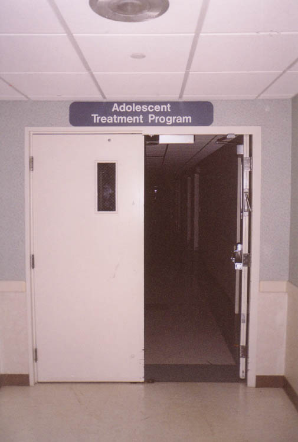
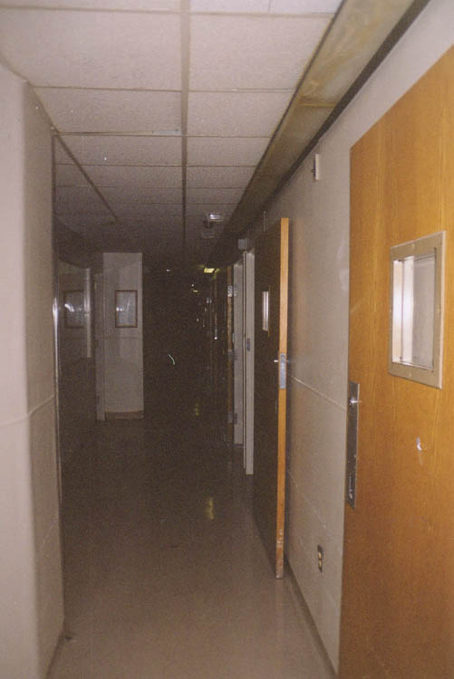
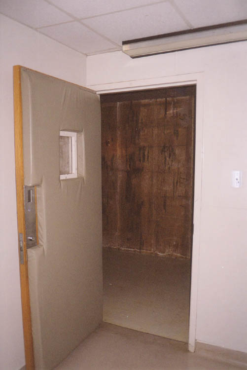
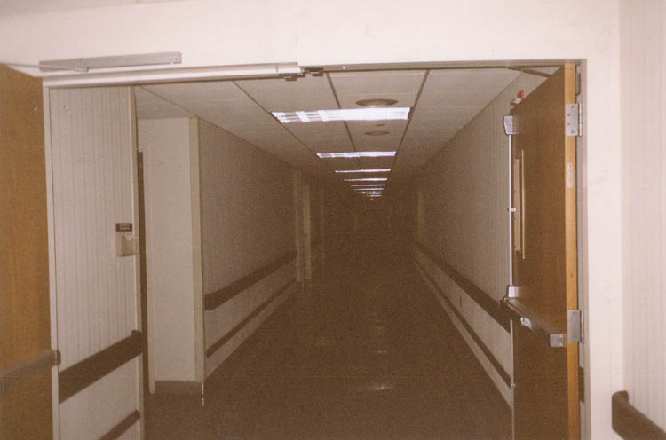

Aside from physical treatment, the Franciscan provided psychiatric services. Two separate wards catered to mental patients--one for adolescents, the other for adults. The adolescent ward in particular was used for long-term care, and was therefore heavily isolated from the rest of the hospital. We had to walk through four separate sets of security doors before we were in the main ward.

These wings contained patient rooms with plexiglass and wire mesh over the windows. The nurses' stations and doctors' offices could be locked up securely. And each psych ward contained actual padded cells.

Standing inside the padded cells was sobering. It's incredible to think that violent, mentally ill people spent hours in these rooms, but that's what must have happened. Each padded cell had a plexiglass-covered camera in an upper corner so the patient could be observed.

Amazing stuff. Click below to keep going and see the most dramatic part of the Franciscan Medical Center--the morgue.

Back